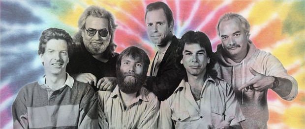
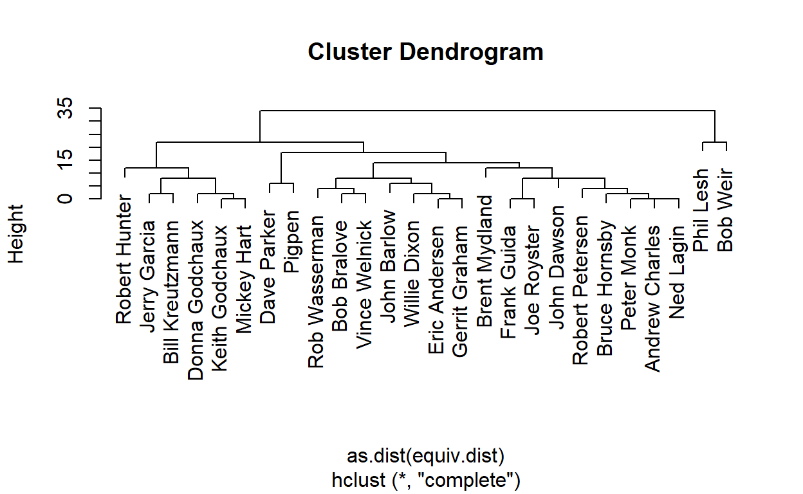
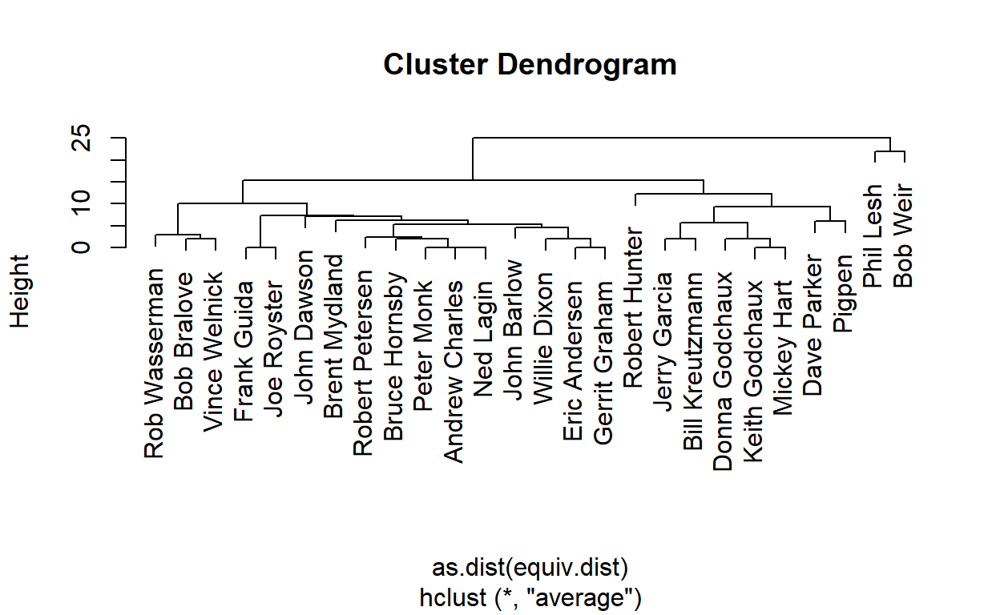
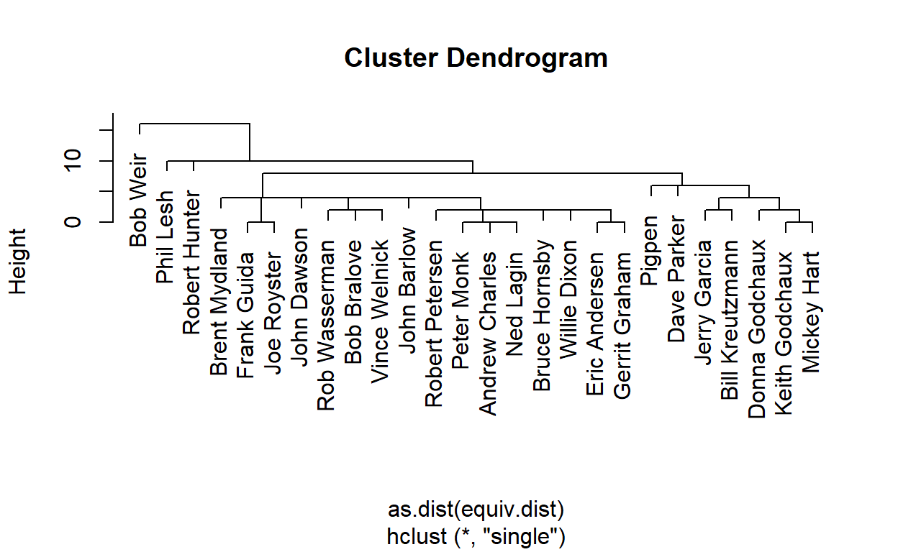
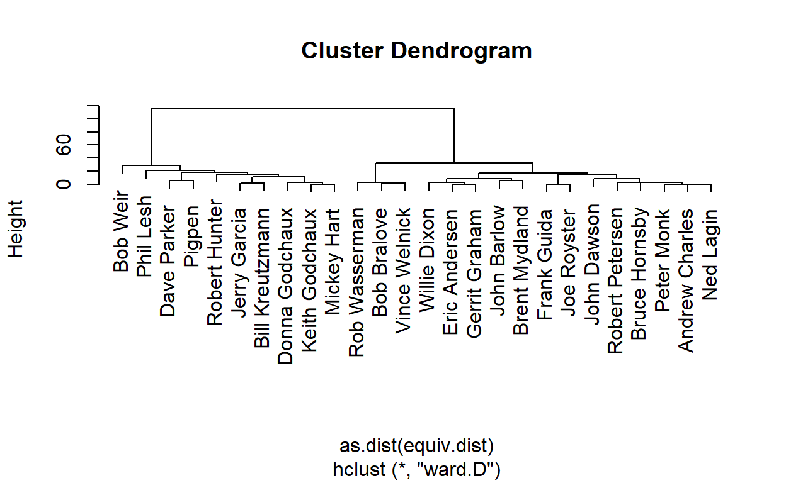
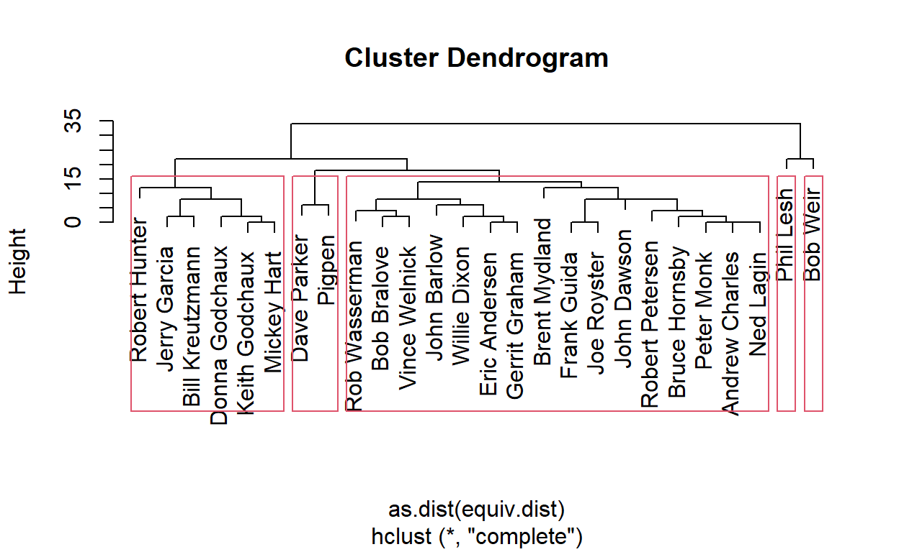
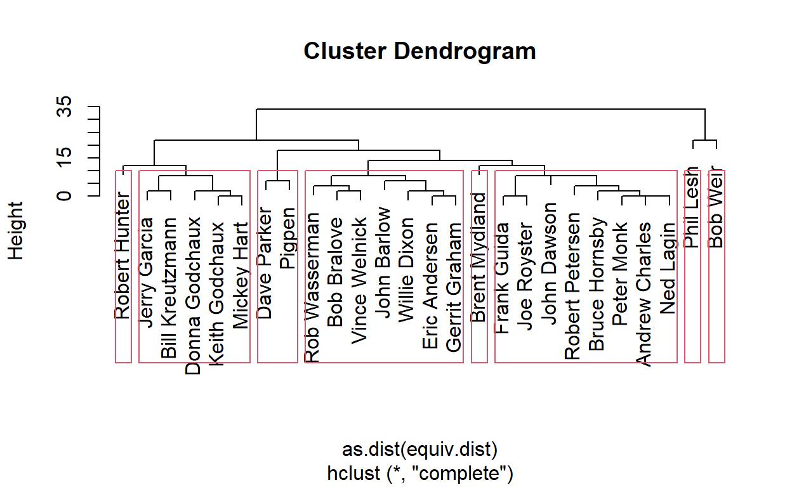
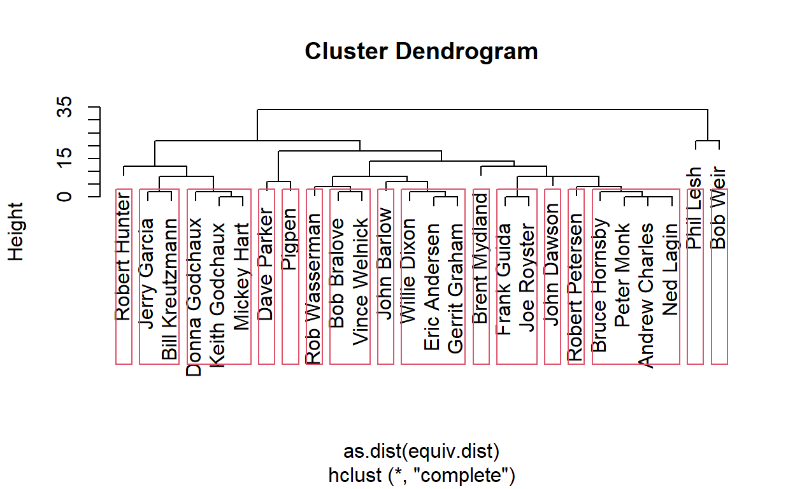
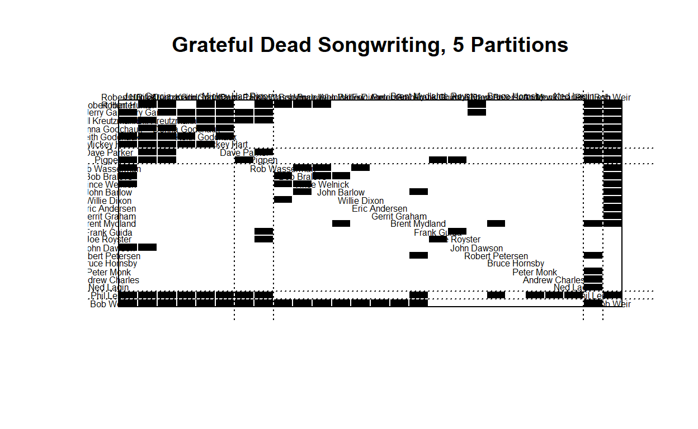
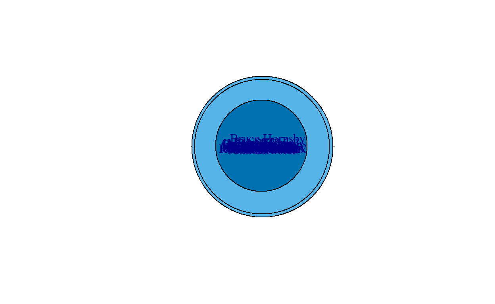

I am continuing to use the Grateful Dead song writing data set that I used in previous assignments to examine co-writing links and centrality. The data set consists of the links between co-writers of songs played by the Grateful Dead over their 30-year touring career that I compiled.
There are 26 songwriters that contributed to the songs played over the course of the Grateful Dead history, resulting in 26 nodes in the dataset.
There are a total of 183 (updated and still under review!) unique songs played, and the varies combinations of co-writing combinations are now represented in a binary affiliation matrix.
I plan on eventually introducing the number of times a given song was played live as a method of weighting the network, given the culture of the band and its’ community was one of collaboration and the prominence of a song being representative of the level at which it resonated with the community. I need to continue to investigate the best time and way to incorporate those weights.
Loading the dataset and creating the network to begin this assignment:
Show code
gd_vertices <- read.csv("gd_nodes.csv", header=T, stringsAsFactors=F)
gd_affiliation <- read.csv("gd_affiliation_matrix.csv", row.names = 1, header = TRUE, check.names = FALSE)
gd_matrix <- as.matrix(gd_affiliation)
gd_projection <- gd_matrix%*%t(gd_matrix)
#Create igraph and statnet Objects
gd_network_ig <- graph.adjacency(gd_projection,mode="undirected") #igraph object
gd_network_stat <- network(gd_projection, directed=F, matrix.type="adjacency") #statnet object
Inspecting the Network Structure
This is a non-directed, unweighted statnet object. It has two components; one large component with one isolate.
Show code
#Inspect New igraph and statnet objects
print(gd_network_stat)
Network attributes:
vertices = 26
directed = FALSE
hyper = FALSE
loops = FALSE
multiple = FALSE
bipartite = FALSE
total edges= 65
missing edges= 0
non-missing edges= 65
Vertex attribute names:
vertex.names
No edge attributesShow code
igraph::components(gd_network_ig)$no
[1] 2Show code
gden(gd_network_stat)
[1] 0.2Show code
gtrans(gd_network_stat)
[1] 0.5240964Create a Data Frame
I need to create a data frame of the network node data as in previous tutorials/assignments, but having had trouble using both igraph and statnet in the same .rmd, I used igraph in previous assignments. I’ll use statnet in this assignment and inspect the differences as well.
Show code
get.eigen<-function(net, attr=NULL){
#set attr="weight" if weighted network
eigen<-evcent(net)
mat<-as.matrix.network(net, attr=attr)
diag(mat)<-0
mat2<-mat%*%mat
rc<-diag(mat2)/rowSums(mat2)
dc<-1-rc
data.frame(name=net%v%"vertex.names",
eigen=eigen,
eigen.rc=eigen*rc,
eigen.dc=eigen*dc)
}
get.brokerage<-function(net, attr="attr"){
temp<-data.frame(brokerage(net, cl = net%v%"attr")$z.nli)
temp$name=net%v%"vertex.names"
mutate(temp, broker.tot = temp$t,
broker.coord = temp$w_I,
broker.itin = temp$w_O,
broker.rep = temp$b_IO,
broker.gate = temp$b_OI,
broker.lia = temp$b_O)%>%
select(contains("broker"))
}
Because I am again having an issue with using igraph and statnet in one knit document, I need to save my dataframe then recall it to knit.
Show code
#create dataframe with names
#gd_nodes<-data.frame(name=gd_network_stat%v%"vertex.names",
#degree=sna::degree(gd_network_stat,gmode="graph"),
#bonpow=bonpow(gd_network_stat),
#betweenness=betweenness(gd_network_stat, gmode="graph"),
#close=sna::closeness(gd_network_stat, gmode="graph", cmode = "undirected"),
#constraint=constraint(gd_network_ig))
#add eigenvector centrality using custom function
#gd_nodes<-full_join(gd_nodes,get.eigen(gd_network_stat), by="name")
#write csv for retrieval in knitting document
#write.csv(gd_nodes, file = "gd_nodes6.csv")
X name degree bonpow betweenness close constraint
1 1 Eric Andersen 1 0.02612461 0.000000 0 1.0000000
2 2 John Barlow 3 -1.44991592 0.750000 0 0.6706222
3 3 Bob Bralove 5 -1.41072900 1.833333 0 0.4989170
4 4 Andrew Charles 1 -0.48330531 0.000000 0 1.0000000
5 5 John Dawson 2 -1.18866981 0.000000 0 1.2945238
6 6 Willie Dixon 2 0.27430842 0.000000 0 0.7040590
eigen eigen.rc eigen.dc
1 0.04883644 0.002872732 0.04596371
2 0.07763512 0.008957898 0.06867722
3 0.12770600 0.015963250 0.11174275
4 0.04317463 0.003083902 0.04009073
5 0.07977694 0.007597803 0.07217913
6 0.06423801 0.005839819 0.05839819Structural Equivalence
Creating the matrix element then taking a look at the summary using the equivalence function “sedist”, the default measure of assessing the approximate structural equivalence of actors, or “complete”:
Show code
#calculate equivalence from specified distance marix
gd_stat_se<-equiv.clust(gd_network_stat, equiv.fun="sedist", method="hamming",mode="graph")
#summary of object produced by sedist()
summary(gd_stat_se)
Length Class Mode
cluster 7 hclust list
metric 1 -none- character
equiv.fun 1 -none- character
cluster.method 1 -none- character
glabels 26 -none- character
plabels 26 -none- character#plot equivalence clustering
plot(gd_stat_se,labels=gd_stat_se$glabels)

I need to look at the other methods of clustering as well. First, “average”:
Show code
#with average cluster.method
gd_avg_se<-equiv.clust(gd_network_stat, equiv.fun="sedist", cluster.method="average", method="hamming",mode="graph")
#plot:
plot(gd_avg_se,labels=gd_stat_se$glabels)

Then “single”:
Show code
#with average cluster.method
gd_sing_se<-equiv.clust(gd_network_stat, equiv.fun="sedist", cluster.method="single", method="hamming",mode="graph")
#plot:
plot(gd_sing_se,labels=gd_stat_se$glabels)

Finally, “ward.D”:
Show code
#with average cluster.method
gd_wrd_se<-equiv.clust(gd_network_stat, equiv.fun="sedist", cluster.method="ward.D", method="hamming",mode="graph")
#plot:
plot(gd_wrd_se,labels=gd_stat_se$glabels)

It is interesting, because none of these dendograms represent fully what I feel accurately represents this network, but it makes me want to look more deeply and understand the network.
Partition Using Clustering
I understand that the number of partitions (or roles) will depend on the height at which the dendrogram is cut. Using the tutorial example, I set the height at 15 and the result is 5 clusters. Using the alternate view from the tutorial, I also set the height at 10, and identify 8 distinct clusters or roles.
Show code
#plot equivalence clustering
plot(gd_stat_se,labels=gd_stat_se$glabels)
#partition the clusters
rect.hclust(gd_stat_se$cluster,h=15)

Show code
#plot equivalence clustering
plot(gd_stat_se,labels=gd_stat_se$glabels)
#partition the clusters
rect.hclust(gd_stat_se$cluster,h=10)

For my own experimenting, looking at it with an even lower height (“3”), it spreads the clusters out to 16.
Show code
#plot equivalence clustering
plot(gd_stat_se,labels=gd_stat_se$glabels)
#partition the clusters
rect.hclust(gd_stat_se$cluster,h=3)

Blockmodel Partitions
Inspecting the goodness of fit of the partitions that result from the clustering steps above using blockmodeling to try and get a better sense of how well the partitioning worked. Using the blockmodel command in statnet and specifying “k=x” means that “x” will indicate how many partitions to create, and “h=x” means that “x” will indicate the height to cut the dendogram.
First, a 2-partition blockmodel:
Show code
#blockmodel and select partitions
blk_mod<-blockmodel(gd_network_stat,gd_stat_se,k=2)
#print blockmodel object
blk_mod
Network Blockmodel:
Block membership:
Eric Andersen John Barlow Bob Bralove Andrew Charles
1 1 1 1
John Dawson Willie Dixon Jerry Garcia Donna Godchaux
1 1 1 1
Keith Godchaux Gerrit Graham Frank Guida Mickey Hart
1 1 1 1
Bruce Hornsby Robert Hunter Bill Kreutzmann Ned Lagin
1 1 1 1
Phil Lesh Peter Monk Brent Mydland Dave Parker
2 1 1 1
Robert Petersen Pigpen Joe Royster Rob Wasserman
1 1 1 1
Bob Weir Vince Welnick
2 1
Reduced form blockmodel:
Eric Andersen John Barlow Bob Bralove Andrew Charles John Dawson Willie Dixon Jerry Garcia Donna Godchaux Keith Godchaux Gerrit Graham Frank Guida Mickey Hart Bruce Hornsby Robert Hunter Bill Kreutzmann Ned Lagin Phil Lesh Peter Monk Brent Mydland Dave Parker Robert Petersen Pigpen Joe Royster Rob Wasserman Bob Weir Vince Welnick
Block 1 Block 2
Block 1 0.1268116 0.6041667
Block 2 0.6041667 1.0000000Show code
plot.block<-function(x=blk_mod, main=NULL, cex.lab=1){
plot.sociomatrix(x$blocked.data, labels=list(x$plabels,x$plabels),
main=main, drawlines = FALSE, cex.lab=cex.lab)
for (j in 2:length(x$plabels)) if (x$block.membership[j] !=
x$block.membership[j-1])
abline(v = j - 0.5, h = j - 0.5, lty = 3, xpd=FALSE)
}
plot.block(blk_mod,main="Grateful Dead Songwriting: 2 Partitions", cex.lab=.4)
And a 5-partition blockmodel:
Show code
#blockmodel and select partitions
blk_mod2<-blockmodel(gd_network_stat,gd_stat_se,k=5)
#print blockmodel object
blk_mod2$block.model
Block 1 Block 2 Block 3 Block 4 Block 5
Block 1 0.06666667 0.05208333 0.3125 0.0625000 0.5
Block 2 0.05208333 0.93333333 1.0000 0.4166667 1.0
Block 3 0.31250000 1.00000000 NaN 1.0000000 1.0
Block 4 0.06250000 0.41666667 1.0000 1.0000000 1.0
Block 5 0.50000000 1.00000000 1.0000 1.0000000 NaNShow code
#plot blockmodel partitions
plot.block(blk_mod2,main="Grateful Dead Songwriting, 5 Partitions", cex.lab=.5)

Plotting Network Roles
To do this, I will assign “block.membership” as a vertex attribute to my 5-partition blockmodel, then use the role attribute to change the color of plotted nodes in a network plot. I am using this part of the tutorial as well because graphics are always a fun thing to do in the middile of learning new concepts and coding all day! I will definitely want to investigate another aspect of this data and graphing options more later because the results show me that this network is not exactly graphing in a familiar way.
Show code
blk_mod3<-blockmodel(gd_network_stat,gd_stat_se,k=5)
Show code
#plot network using "role" to color nodes: statnet
#GGally::ggnet2(gd_network_stat,
#node.color="role",
#node.size=degree(gd_network_stat),
#node.label = "vertex.names",
#node.alpha = .3)
knitr::include_graphics("photo9.png")

Show code

Centrality by Network Role
I am attempting to use the “gd_nodes” table created earlier and adding the role assignments from the “blockmodel” calculations to summarise average node measures of centrality by role.
Yet again, I am finding that the code used for this process using both igraph and statnet worked until I knit the document, but is giving me trouble at that point, so I will revisit this process.
Show code
#attach role to .nodes dataframe
#gd_new_nodes <- gd_nodes$role<-V(gd_network_ig)$role
#gd_new_nodes<-data.frame(writer=gd_network_ig%v%"vertex.names",
#degree=sna::degree(gd_network_ig,gmode="graph"),
#bonpow=bonpow(gd_network_stat),
#betweenness=betweenness(gd_network_stat, gmode="graph"),
#close=sna::closeness(gd_network_stat, gmode="graph"),
#constraint=constraint(gd_network_ig),
#role=V(gd_network_ig)$role)
#summarize various network statistics by role
#gd_new_nodes%>%
#group_by(role)%>%
#summarise_all(mean, na.rm=TRUE)%>%
#as.matrix()%>%
#print(digits=2)
Utilizing the “concoR” package
Show code
library(concoR)
#select partitions with concor
concoR::concor_hca(list(gd_projection), p=2)
block vertex
1 1 Eric Andersen
2 1 John Barlow
7 2 Bob Bralove
11 3 Andrew Charles
17 4 John Dawson
8 2 Willie Dixon
18 4 Jerry Garcia
19 4 Donna Godchaux
20 4 Keith Godchaux
3 1 Gerrit Graham
12 3 Frank Guida
21 4 Mickey Hart
4 1 Bruce Hornsby
22 4 Robert Hunter
23 4 Bill Kreutzmann
13 3 Ned Lagin
24 4 Phil Lesh
14 3 Peter Monk
5 1 Brent Mydland
25 4 Dave Parker
15 3 Robert Petersen
26 4 Pigpen
16 3 Joe Royster
9 2 Rob Wasserman
6 1 Bob Weir
10 2 Vince WelnickTaking this output and plotting it as I tried earlier, I get a better visualization of the blockmodeling:
Block 1 Block 2 Block 3 Block 4
Block 1 0.33333333 0.2083333 0.02777778 0.1666667
Block 2 0.20833333 0.6666667 0.00000000 0.0750000
Block 3 0.02777778 0.0000000 0.06666667 0.1000000
Block 4 0.16666667 0.0750000 0.10000000 0.6666667Show code
#plot blockmodel partitions
plot.block(blk_mod,main="Grateful Dead Songwriting, Concor 4 Partitions", cex.lab=.5)
Show code
#assign block membership to vertex attribute
gd_network_stat%v%"role"<-blks$block[match(gd_network_stat%v%"vertex.names",blks$vertex)]
#plot network using "role" to color nodes
#GGally::ggnet2(gd_network_stat,
#node.color="role",
#node.size=degree(gd_network_stat),
#node.label = "vertex.names",
#node.alpha = .6)
Finally, I want to look at the “optimized” 5 partition model, which in the end seems to represent the network most intuitively of the models I’ve explored so far.
I have more evaluations to do but I continue to struggle with using igraph and statnet in the same .rmd file, so I will revisit this process in future posts.
Citations:
Allan, Alex; Grateful Dead Lyric & Song Finder: https://whitegum.com/~acsa/intro.htm
ASCAP. 18 March 2022.
Dodd, David; The Annotated Grateful Dead Lyrics: http://artsites.ucsc.edu/gdead/agdl/
Schofield, Matt; The Grateful Dead Family Discography: http://www.deaddisc.com/
Photo by Grateful Dead Productions
This information is intended for private research only, and not for any commercial use. Original Grateful Dead songs are ©copyright Ice Nine Music